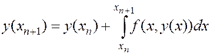
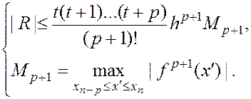

Де
Отже, використання різницевих методів розпадається на два етапи:
1)Спочатку потрібно знайти кілька наближених значень і , (наприклад, за допомогою метода Рунге-Кутта),
2) Наступні наближені значення шуканої функції обчислюються за формулою (5)
РІЗНИЦЕВІ МЕТОДИ РОЗВ ЯЗУВАННЯ ЗАДАЧІ КОШІ
Знову розглядаємо задачу Коші (1), (2). Припустимо, що уже відомо р значень наближеного розв’язку в точках
Запишемо задачу (1),(2) в інтегральній формі

І наступні наближені значення шуканої функції знаходимо за допомогою наближеної рівності
Де  - поліном р-ого степеня, який в (р+1) точках збігається з відповідними значеннями , k=0,1,2,…,p.
- поліном р-ого степеня, який в (р+1) точках збігається з відповідними значеннями , k=0,1,2,…,p.
Отже, використання різницевих методів розпадається на два етапи:
1)Спочатку потрібно знайти кілька наближених значень і , (наприклад, за допомогою метода Рунге-Кутта),
2) Наступні наближені значення шуканої функції обчислюються за формулою (5)
Екстраполяційний метод Адамса
Нехай окрім початкової умові (2) яким-небудь чином знайдені додаткові значення в точках
Наступні наближені значення шуканого розв’язку будемо шукати за допомогою формули (80, де в якості P(x) взято інтерполяційний поліном Ньютона інтерполяції назад, який в точках набуває значення
Цей поліном має вигляд:
Відповідний йому залишковий член R задовольняє нерівності

Підставивши (9) в (8) і перейшовши до змінної інтегрування, одержимо:
Або в більш компактній формі
Де
Формула (10) і визначає екстраполяційний метод Адамса.
Найбільш поширеною формула для р=3:
.
Під час виконання розрахунків, зазвичай, значення шуканої функції , та значення різниць записують у вигляді таблиці
|
|||||
|
|||||
|
|
|
|||
|
|
|
|||
… |
… |
… |
|
|
|
Інколи рівність (10) подають в іншій форми, виражаючи різницічерез значення функції у вузлах інтерполяції. Це формула
де — коефіцієнти, яки знаходяться із тотожності
Числові значення деяких перших коефіцієнтів такі:
p/k |
0 |
1 |
2 |
3 |
1 |
|
|
||
2 |
|
|||
3 |
Для контролю враховують, що
Наближені методи розв’язування алгебраїчних та трансцендентних рівнянь із однією змінною.